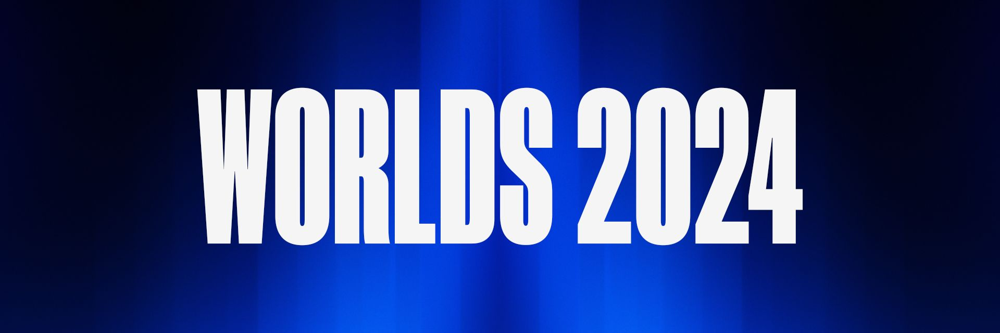

League of Legends World Championship 2024: A Historic Tournament in Esports

The League of Legends World Championship (Worlds) 2024 has proven to be a monumental event in the history of esports.
Held across Europe, this year's tournament showcased incredible gameplay, record-breaking viewership, and a celebration
of the global gaming community. Spanning from September 25 to November 2, the event culminated in an unforgettable final
that left fans worldwide in awe. Here’s a detailed look at the highlights of this prestigious tournament.
Scroll down to read more.
The Road to Worlds 2024: Teams and Format
Worlds 2024 saw participation from 20 elite teams representing various regions. These teams competed for the coveted Summoner's Cup and a share of the $2.25 million prize pool. The tournament's format was divided into three primary stages: Play-In, Swiss Stage, and Knockout Stage.Play-In Stage
The tournament kicked off with the Play-In Stage held at Riot Games Arena in Berlin from September 25 to 29. This phase featured eight teams from smaller regions and fourth seeds from major regions. The double-elimination bracket allowed four teams to advance to the Swiss Stage, ensuring a blend of competition between underdogs and more established squads.Swiss Stage
From October 3 to 13, the Swiss Stage saw 16 teams, including those advancing from Play-Ins and directly qualified teams, battle it out. The Swiss-system format included five rounds, with each match being a best-of-three. Teams needed three wins to progress to the Knockout Stage, while three losses resulted in elimination. This stage, hosted again in Berlin, provided fans with intense matches and upsets, setting the stage for the final phase.Knockout Stage
The Knockout Stage, held in Paris and London, featured the top eight teams from the Swiss Stage. The quarterfinals and semifinals took place in Paris at the Adidas Arena from October 17 to 27. The grand finale occurred on November 2 at the iconic O2 Arena in London. All matches in this phase were best-of-five, showcasing high-stakes gameplay and dramatic finishes.The Grand Finale: T1 vs. Bilibili Gaming
The Worlds 2024 final was a highly anticipated clash between South Korea’s T1 and China’s Bilibili Gaming. T1, led by the legendary Lee “Faker” Sang-hyeok, was chasing its fifth championship title. Meanwhile, Bilibili Gaming sought its first-ever Worlds victory. The best-of-five series kept fans on the edge of their seats. Both teams displayed extraordinary skill, with momentum swinging back and forth throughout the match. Ultimately, T1 emerged victorious, securing a 3-2 win. Faker’s leadership and clutch plays earned him the Finals MVP award, marking a significant moment in his illustrious career. This victory solidified T1's position as one of the most dominant teams in League of Legends history.Cultural Impact and Entertainment
One of the unique aspects of Worlds 2024 was its cultural and entertainment contributions. Riot Games partnered with the legendary rock band Linkin Park to create the championship anthem, "Heavy Is The Crown." This collaboration resonated deeply with fans, especially as it marked Linkin Park's return to the music scene after a seven-year hiatus. The live performance of the anthem during the finals added to the event's grandeur, creating a bridge between gaming and mainstream culture. Riot Games’ dedication to integrating music and art into its events continues to elevate the global appeal of League of Legends esports.Viewership Records and Fan Engagement
Worlds 2024 set new benchmarks for esports viewership. The live audience at the O2 Arena in London exceeded 14,000, creating an electrifying atmosphere. Globally, the tournament reached a peak of 6.9 million concurrent viewers (excluding Chinese platforms), making it one of the most-watched esports events in history. These numbers highlight the growing prominence of esports and the dedication of its global fanbase. Riot Games also enhanced fan engagement through various digital initiatives. Fans could participate in prediction challenges, watch live streams with interactive features, and engage with players through social media campaigns. The increased accessibility and interactivity contributed to the tournament’s massive success.Prize Pool Distribution
The $2.25 million prize pool was distributed among all participating teams, reflecting their efforts and achievements throughout the tournament. Here’s a breakdown of the prize distribution:- Champion (T1): $450,000
- Runner-up (Bilibili Gaming): $360,000
- 3rd-4th Place (Weibo Gaming and Gen.G Esports): $180,000 each
- 5th-8th Place: $101,250 each
- 9th-11th Place: $78,750 each
- 12th-14th Place: $67,500 each
- 15th-16th Place: $56,250 each
- 17th-18th Place: $39,375 each
- 19th-20th Place: $22,500 each
Player Highlights and Storylines
The tournament was filled with standout performances and compelling narratives. Faker’s journey with T1 was one of redemption and legacy. As a player with an unparalleled record in League of Legends history, his Finals MVP performance silenced doubters and reaffirmed his status as the greatest player of all time. Bilibili Gaming’s rise was another notable storyline. Despite falling short in the finals, their journey from underdogs to contenders inspired fans worldwide. Players like Zeng “Yagao” Qi and Chen “Bin” Ze-Bin showcased incredible talent, cementing their places among the top players in the world. The tournament also highlighted the growing competitiveness of smaller regions. Teams from emerging regions, such as Latin America and Oceania, demonstrated significant improvement, narrowing the skill gap with major regions.The Future of League of Legends Esports
Worlds 2024 served as a testament to the continued growth of esports as a global phenomenon. Riot Games’ commitment to innovation, both in terms of production and competition, has set a high standard for future events. The inclusion of diverse teams, new technologies, and cultural elements ensures that League of Legends remains at the forefront of competitive gaming. As the esports ecosystem evolves, challenges such as player burnout, regional disparities, and economic sustainability remain. However, the success of Worlds 2024 provides a roadmap for addressing these issues while expanding the reach and impact of competitive gaming.Conclusion
The League of Legends World Championship 2024 was more than just a tournament; it was a celebration of skill, strategy, and community. From T1’s historic victory to record-breaking viewership and cultural collaborations, Worlds 2024 has set a new benchmark for what esports can achieve. As the dust settles, fans and players alike look forward to what Riot Games has in store for the future, with the promise of even greater achievements on the horizon.